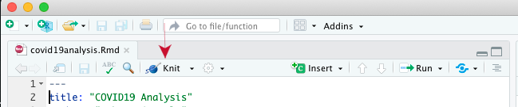

The learning objectives for this practical are:
To do this practical you need an installation of R and RStudio. You can find the instructions in the setup link on how to install R and RStudio in your system. Make a directory called practical10 for this practical.
Start RStudio and create a new R Markdown file by doing File -> New File -> R Markdown ... with the default option for output format (HTML). Give the text COVID19 Analysis as title. You will get a sample R Markdown file, save it under the name index.Rmd in the practical10 directory you previously created, by using the menu option File -> Save. Set the working directory to the practical10 directory where you have saved this R Markdown document under the name index.Rmd.
Now, we are going to process the index.Rmd file to obtain its corresponding HTML output (index.html) by pressing the knit button on top of the source code panel (see image below with a red arrow pointing to that button).

After processing the file, a popup window should appear displaying the HTML page of the R Markdown file.
Exercise: Modify this index.Rmd file to contain some part of the analysis of the COVID19 data from practical 8. The final R Markdown document should contain:
Alternatively, if your prefer, you may practice with R Markdown by starting with the analysis of the data of your FCB project, but put just some R code to allow you having time to do the rest of this practical.
Slides 7 to 11 from the lecture about reproducibility contain a succint summary of R Markdown, but the internet is plenty of materials to learn it. In particular, the website https://rmarkdown.rstudio.com contains well structured learning material and example, concretely, in this link you can find a more comprehensive description of the R Markdown language, in the section Tables you can find a way to pretty print the table with numerical results and in this other link you have a quick reference to the most commonly used R Markdown syntax. The Help menu of RStudio also has links to many resources including cheat sheets for R Markdown.
The action performed by the knit button in RStudio can be instructed from the R shell by typing the following:
> rmarkdown::render("filename.Rmd")where you should replace filename.Rmd by the filename of the R Markdown document your are working on. The previous instruction assumes you have set the working directory of RStudio to the directory where the R Markdown file is located.
Likewise, you can process the R Markdown document from the Unix shell command line with the following instruction:
$ Rscript -e "rmarkdown::render('filename.Rmd')"The rmarkdown package provides the possibility of building what the authors of that package call Markdown websites, which is web page displaying the contents of two or more R Markdown documents. To see how it works you need to follow the next steps:
index.Rmd.docs within the directory where the R Markdown file index.Rmd is.In the same directory where the R Markdown file index.Rmd is, create a Markdown file called about.md with the following contents:
---
title: About this website
---
This website was created by meIn the same directory where the R Markdown file index.Rmd is, create a YAML text file called _site.yml with the following contents:
name: "my-first-rmarkdown-website"
output_dir: "docs"
navbar:
title: "My first R Markdown Website"
left:
- text: "Home"
href: index.html
- text: "About"
href: about.html
output:
html_document:Having the working directory of RStudio pointing to the directory were you stored the previous files, type the following instruction in the R shell:
> rmarkdown::render_site()alternatively, you can also create the website from the Unix shell command line by going into that directory and typing:
$ Rscript -e "rmarkdown::render_site()"Open the file docs/index.html in your web browser and you should see your first R Markdown website.
You may consult the help page of the function render_site() from the rmarkdown package for further details on available parameters and how it works. Essentially, it looks up for the files _site.yml and index.Rmd, and every other .Rmd, .md or .html file, and process them to put them together as a website in the directory docs (the name of this directory can be changed through the keyword output_dir in the _site.yml file, omitting this keyword will result in creating the website in a directory called _site).
Exercise: using the GitHub repo you created in practical 9 by accepting the GitHub Classroom assignment called Website assignment, move your R Markdown documents and website to that repo and try to see it displayed through the GitHub Pages private URL from that GitHub repo. If you want to keep the contents you had in the index.html from that repo, rename that file to some other name.